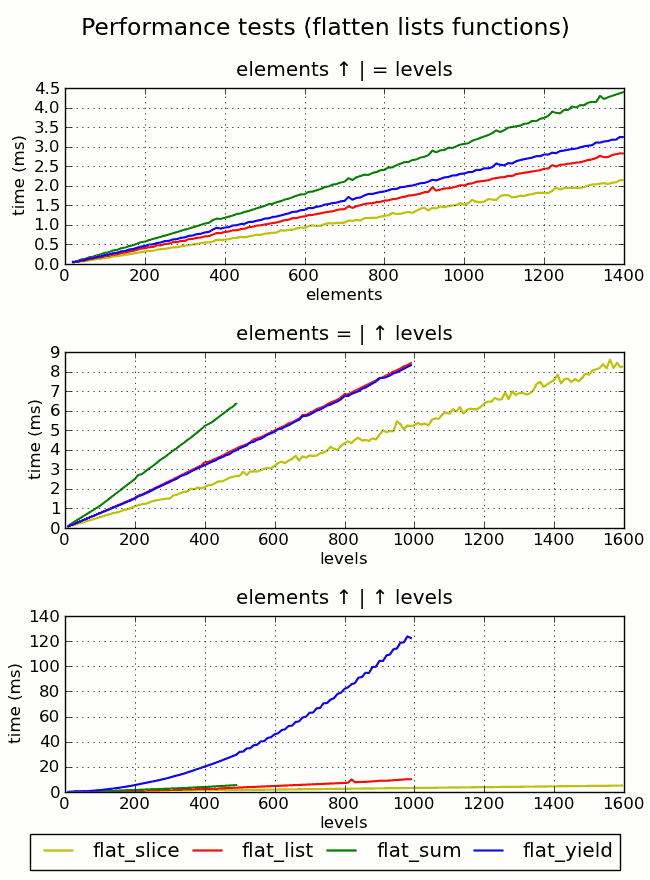
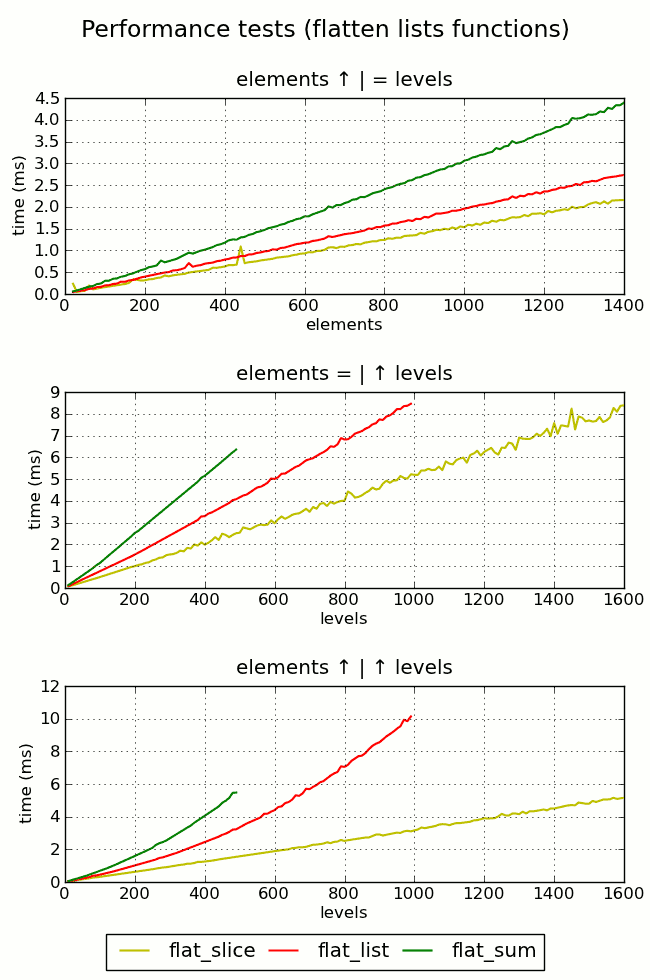
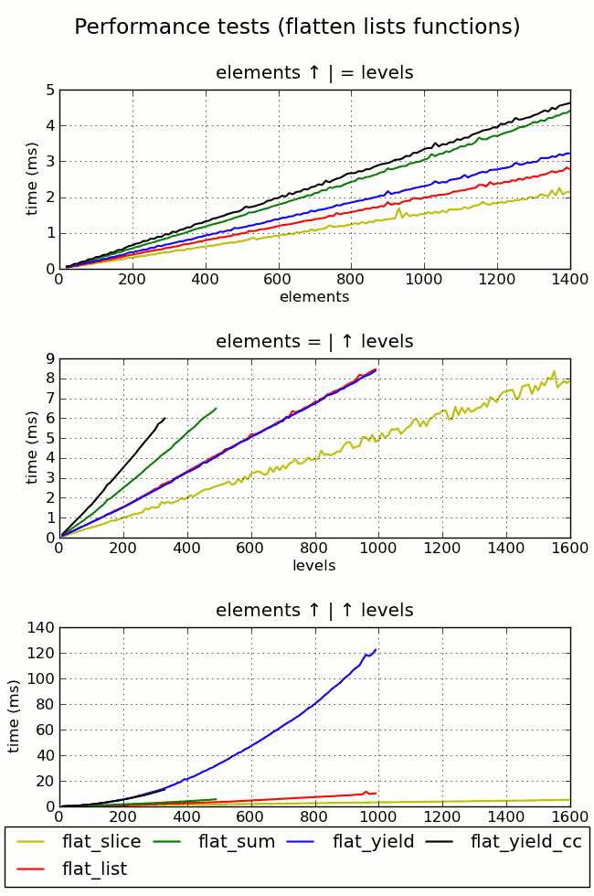
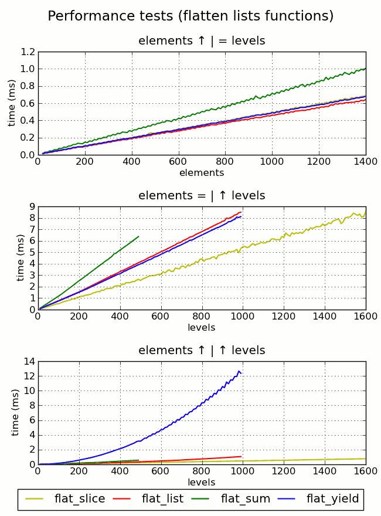

Una lista multinivel o anidada es aquella que a su vez contiene otra(s) listas o
tuplas (o generadores, en general cualquier iterable). Estas listas pueden a su
vez contener otras, que a su vez puede contener otras, etc. Cada una de estas
listas dentro de otra constituye un nivel de anidamiento. Un ejemplo sencillo
puede ser el siguiente:
lista_anidada = [0, ['a', 'b', 'c'], 1, ['A', ('aA', 'bB', 'cC'), 'B'], 2]
Esta es una lista con dos niveles de anidamiento, porque la segunda lista dentro
de la primera incluye a su vez dentro una tupla.
Dada una lista de estas características, en ocasiones necesitamos aplanarla, es
decir tener todos los elementos dentro de una única lista sin anidamiento, una
lista plana. Siguiendo con el ejemplo anterior, esta lista una vez aplanada
quedaría del siguiente modo:
lista_aplanada = [0, 'a', 'b', 'c', 1, 'A', 'aA', 'bB', 'cC', 'B', 2]
Bien, ¿y como se consigue esto? Eso es precisamente lo que voy a tratar aquí,
diversos métodos para aplanar una lista.
Listas anidadas a un solo nivel.
Un primer modo de hacer esto podría ser emplear una función similar a esta:
def flattener_sum(lst):
return sum(lst, [])
Que parece muy simple y eficaz:
>>> lista_anidada = [0, ['a', 'b', 'c'], 1, ['A', ('aA', 'bB', 'cC'), 'B'], 2]
>>> flattener_sum(lista_anidada)
Traceback (most recent call last):
File "<input>", line 1, in <module>
File "<input>", line 2, in flattener_sum
TypeError: can only concatenate list (not "int") to list
>>> lista_anidada = [['a', 'b', 'c'], ['A', ('aA', 'bB', 'cC'), 'B']]
>>> flattener_sum(lista_anidada)
['a', 'b', 'c', 'A', ('aA', 'bB', 'cC'), 'B']
>>>
Pero que como vemos tiene un problema, solo funciona con lista de un solo nivel
de anidamiento y además solo funciona únicamente con listas que solo contienen
otras listas.
Otro método que solo funciona un nivel de anidamiento, y solo con listas de
iterables (soporta tuplas, generadores...) es el siguiente:
def flattener(lst):
return [item for sublist in lst for item in sublist]
>>> lista_anidada = [['a', 'b', 'c'], (i for i in range(12))]
>>> flattener(lista_anidada)
['a', 'b', 'c', 0, 1, 2, 3, 4, 5, 6, 7, 8, 9, 10, 11]
>>>
Pero las listas anidadas compuestas únicamente de otros iterables son un caso
demasiado concreto y probablemente poco frecuente. Vamos a ver ahora cuatro
métodos que funcionan en todos los casos, en todo tipo de listas anidadas y a
cualquier nivel de anidamiento.
Aplanar cualquier tipo de lista anidada.
El primer ejemplo que pongo aquí se deriva del primero en que empleábamos la
función sum() y que realizó Chema Cortés en esta pregunta de
majibu.
def flat_sum(lst):
return sum((flat_sum(elem) if
hasattr(elem, "__iter__") and not isinstance(elem, basestring)
else [elem] for elem in lst), [])
Y que como podemos ver, ya puede aplanar sin problemas el primer ejemplo que
poníamos:
>>> lista_anidada = [0, ['a', 'b', 'c'], 1, ['A', ('aA', 'bB', 'cC'), 'B'], 2]
>>> flat_sum(lista_anidada)
[0, 'a', 'b', 'c', 1, 'A', 'aA', 'bB', 'cC', 'B', 2]
Este método es relativamente fácil de recordar, pero tiene un rendimiento muy
pobre, como ya veremos más adelante.
El siguiente método lo encontré en esta pregunta de StackOverflow, y
obtiene la mejor puntuación de todas las soluciones propuestas. Seguramente se
debe a lo elegante de la solución y a que los generadores tienen fama de
eficaces y de consumir poco espacio en RAM. Aunque como luego veremos, es quizá
la peor de las soluciones que aquí comento.
def flat_yield(lst):
def flatten(lst):
for elm in lst:
if hasattr(elm, "__iter__") and not isinstance(elm, basestring):
for sub in flatten(elm):
yield sub
else:
yield elm
return list(flatten(lst))
Aunque en la función original esta línea:
if hasattr(elm, "__iter__") and not isinstance(elm, basestring):
es sustuida por esta otra:
if (isinstance(elem, collections.Iterable) and not isinstance(elem, basestring)):
el resultado es el mismo. Aunque la solución que yo propongo es ligeramente más
rápida.
Esta otra solución la hallé aquí y es un método que ya ofrece un
rendimiento aceptable a la par de ser muy elegante y pythonica. Esta emplea
los métodos propios de la listas append() y expand() para conseguir su
objetivo. Es una función recursiva al igual que la anterior.
def flat_list(lst):
result = []
for elem in lst:
if hasattr(elem, "__iter__") and not isinstance(elem, basestring):
result.extend(flat_list(elem))
else:
result.append(elem)
return result
El problema de la recursividad.
El problema de los dos métodos anteriores es que emplean recursividad, y no
digo que la recursividad sea un problema, el problema son los limites por
defecto en Python. Por defecto Python solo admite 1000 niveles de recursividad
(e.g. una lista con 1000 niveles de anidamiento), y a nada que nuestra función
supere estos niveles, nos encontraremos con un bonito error como este:
>>> RuntimeError: maximum recursion depth exceeded while calling a Python object
Aunque esto es algo que puede sortearse y podemos ampliar el limite de recursión
de esta forma:
>>>import sys
>>> sys.setrecursionlimit(200000)
>>> # ahora comprobamos el nuevo limite de recursividad
>>> sys.getrecursionlimit()
200000
Ahora ya podríamos emplear el método hasta que alcanzáramos los 20.000 niveles
de recursión. Aunque no me parece la manera idónea de hacer las cosas, desde
luego. Si bien es cierto que será bastante difícil que nos encontremos listas
anidadas hasta estos niveles en el mundo real.
La mejor solución.
Sin embargo tenemos una última solución que funciona en todos los casos y que no
es recursiva y que además tiene el mejor rendimiento, con diferencia, de todos
los aquí comentados. Este se basa en la sustitución en línea de los elementos de
la lista empleando la operación slice Esta solución fue aportada por Chema
Cortés en la misma pregunta de majibu.
def flat_slice(lst):
lst = list(lst)
for i, _ in enumerate(lst):
while (hasattr(lst[i], "__iter__") and not isinstance(lst[i], basestring)):
lst[i:i + 1] = lst[i]
return lst
Pruebas de rendimiento
Para poder comprobar las diferencias de rendimiento entre unos métodos y otros,
he preparado unos tests que ejecutan cada una de las funciones analizadas 10
veces por cada caso planteado. Las funciones que he analizado son las cuatro que
soportan cualquier tipo de lista. Al final se generan unas gráficas y unos
archivos en formato csv con los resultados de las pruebas. Para ello se generan
un par de valores (caso) en función del número de elementos de la lista y los
niveles de anidamiento de la misma. A partir de ahí planteo tres supuestos:
- Número de elementos en aumento, número de niveles constante.
- Número de elementos constante, número de niveles en aumento.
- Número de elementos en aumento, número de niveles en aumento.
Para poder realizar estas pruebas, tenía que generar una lista que cumpliera las
condiciones planteadas para cada caso. Para ello he creado una función que
genera una lista anidada con el número de elementos y niveles que nosotros le
indiquemos. Los elementos que la componen son números y cadenas (o solo números)
organizados aleatoriamente aunque con una estructura que es constante a
cualquier nivel de anidamiento o número de elementos. La razón de esto es que
aunque las listas se generen de forma aleatoria, si la estructura de las mismas
fuera dispar, estaríamos introduciendo un tercer factor, cuando lo que queremos
medir es el rendimiento en función de dos: nº elementos y nº niveles. De esta
manera podemos medir de una manera bastante fiable el rendimiento de los
distintos métodos en función de estos dos factores. Aunque aún existe otro
factor que podemos controlar solo hasta cierto punto, que son los procesos
corriendo simultáneamente y en segundo plano en nuestra maquina. Aunque los
reduzcamos al mínimo, los pocos que queden pueden generar pequeños "artefactos"
que desvirtúan un poco nuestra medida, pero que para el objetivo que perseguimos
podemos considerar como despreciables. La estructura de estas listas generadas
es el de una lista de listas anidadas en la que se agrupan todos los elementos
posibles hasta el último nivel de anidamiento solicitado. Los elementos que
sobran se añaden al nivel base de la lista. Es algo así como si en el mundo real
tuviéramos un campo lleno de zigurats (pirámides escalonadas de piedra) con las
piedras sobrantes desperdigadas por el mismo. De ahí el nombre que le he puesto
a la función.
def ziggurat(stones=1, steps=1, with_iters=False, only_numbers=False):
"""Make a list of nested lists, like a field of ziggurats."""
# First, generate the list of the stones (numbers and "strings")
as_str = [] if only_numbers else random.sample(range(stones), stones / 2)
stones_list = [str(stn) if stn in as_str else stn for stn in range(stones)]
# Find the number of step pyramids (aka ziggurats)
num_zggts = stones / (steps + (steps - 1))
ziggurats = []
for zggt in range(num_zggts):
zggt_step = []
# Build a step pyramid, step by step, until the chosen level
for step in range(steps):
# Get a choice of stones from the list to make a step & remove them
choice = random.sample(stones_list, 1 if not step else 2)
for choosen in choice:
stones_list.remove(choosen)
# Build a step
if not step:
zggt_step.append(choice[0])
else:
choice.insert(1, iter(zggt_step) if with_iters else zggt_step)
zggt_step = choice
ziggurats.append(zggt_step)
# IF don't have stones enough to make even a ziggurat, then will make
# multiple one-stone-many-airsteps ziggurats
if not num_zggts:
for step in range(steps):
for stn in range(0, stones, 2):
stones_list[stn] = stones_list[stn:stn + 1]
# Finally, mix the remaining stones and the ziggurats, et Voila!!!
stones_list += ziggurats
random.shuffle(stones_list)
return stones_list
Ejemplos de listas generadas por esta función:
>>> final.ziggurat(15, 4)
[['7', ['14', [12, ['13'], '10'], 5], '11'], 1, ['2', ['0', [4, [8], 3], 9], 6]]
>>> final.ziggurat(8, 5)
[5, [[[[['2']]]]], '1', [[[[[4]]]]], [[[[['6']]]]], 3, [[[[['0']]]]], 7]
>>> final.ziggurat(8, 3, True)
[['2', ['7', [<listiterator object at 0x9fe47ac>], '5'], 1], 0, 6, 4]
>>> final.ziggurat(8, 3, only_numbers=True)
[[7, [3], 1], [2, [5], 8], [4, [0], 6]]
Una vez ejecutados estos test, podemos ver en estas gráficas los resultados de
los mismos:

Analizemos gráfica a gráfica:
-
Aquí podemos ver que tal y como adelantaba anteriormente, la función
flat_slice() es la más eficaz y la función flat_sum() la peor de todas.
Además como podemos ver el incremento es constante, pero de magnitudes muy
diferentes. Bueno, la verdad es que una diferencia de unos 2,25 ms por ejecución
cuando la lista consta de 1400 elementos es insignificante, el hecho es que
puede ser importante si se busca el rendimiento y se aplanan listas de forma
masiva. En este caso no se ven afectado por el limite de recursión, todos los
metodos han seguido funcionando sin problemas incluso cuando he aumentado a
10.000 elementos por lista.
-
En esta progresión podemos ver que las diferencias de rendimiento entre el
peor método y el mejor son aún más acusadas. Curiosamente el método empleando
generadores (flat_yield()) y el metodo que emplea los métodos de las listas
(flat_list()) tienen un rendimiento identico. Aquí aparece por vez primer el
limite de recursividad por defecto de python. Evidentemente la primera en caer
es la función flat_sum(), ya que emplea doble recursividad y deja de funcionar
a los 500 niveles de anidamiento por lista. Despues se caen sin remedio las
funciones flat_yield() y flat_list() al alcanzar los 1000 niveles. La
función flat_slice() al no ser recursiva no se ve afectada por este limite.
-
Finalmente en esta gŕafica despejamos todas las dudas. Al aumentar
simultaneamente y en la misma proporción el número de elementos y el número de
niveles, podemos ver como la función flat_yield() aumenta de manera drástica
el tiempo empleado en cada ejecución. Antes de caer debido al limite de la
recursividad, tenemos una diferencia de 119,38 ms por cada ejecución para
1980 elementos y 990 niveles con la función flat_slice(). Una diferencia de
más de un segundo para diez ejecuciones. Y aunque esta gran diferencia desvirtua
un poco la comparación entre el resto de funciones, básicamente siguen un
comportamiento similar a la de la anterior gráfica, destacando otra vez el
metodo flat_slice como el más eficaz de todos ellos.
Como conclusión podriamos decir que moviendonos en los valores que nos movemos,
en ms, y con listas anidadas "normales" (sin llegar a cifras tan elevadas en
elementos/niveles), que cualquier metodo a priori nos sirve. Aunque yo
descartaría directamente el método de la función flat_sum() y apostaría por
emplear siempre flat_slice(), sobre todo si va a ser ejecutado numerosas veces.
Estas funciones, alguna más, ejemplos de uso y los test de rendimento se
encuentran en el fichero flatten_nested_lists.py de mi repositorio.
Comentarios realizados anteriormente en Drupal
Interesante artículo.
por kikocorreoso el Jue, 02/06/2011 - 10:53
Interesante artículo.
Por cierto, ¡Qué gráficas más chulas! ;-D
Si, la librería matplotlib da
por joe di castro el Jue, 02/06/2011 - 11:03
Si, la librería matplotlib da unos
resultados muy buenos :)
Gracias por la recomendación.
¡Buen trabajo!
por Chema Cortés el Vie, 03/06/2011 - 21:28
¡Buen trabajo!
Se me hace raro que las gráficas salgan tan lineales. Esperaba que los
rendimientos se degradaran al aumentar niveles y elementos.
Que la soluciones flat_list y flat_yield vayan tan parejas me da que es
porque esta última está utilizando al final el constructor list() para generar
la lista; pero que vaya tan mal cuando se incrementa el número de elementos y
de niveles, tiene que ser debido a la sobrecarga de clausuras que hace falta
mantener.
Creo que habría una opción más eficiente para reducir las clausuras. ¿Podrías
hacer la prueba con esta versión de flat_yield? Gasta más memoria, pero tiene
que acercarse más a flat_list. Sólo he cambiado que la recursividad se haga
sobre el nivel superior en lugar de hacerlo dentro de la clausura. Ésto, en la
práctica, va creando listas intermedias que sustituyen las clausuras, lo que
debería simplificar el número de "contextos" a mantener:
def flat_yield(lst):
def flatten(lst):
for elm in lst:
if hasattr(elm, "__iter__") and not isinstance(elm, basestring):
for sub in flat_yield(elm):
yield sub
else:
yield elm
return list(flatten(lst))
Gracias. Si, la verdad es que yo
por joe di castro el Vie, 03/06/2011 - 23:16
Gracias. Si, la verdad es que yo tampoco esperaba una respuesta tan lineal en
los resultados, pero engañan algo, como ya comentaba, la espectacular
degradación en el rendimiento de la función flat_yield, enmascara el
comportamiento del resto de funciones en el último supuesto. He realizado una
comparativa con todas las funciones sin emplear flat_yield, y como ves la cosa
cambia ligeramente y ya se parece algo más a lo esperado, aunque siguen siendo
bastante lineales.

Si, el utilizar el constructor list, cambia bastante las cosas, de hecho el
método de la función flat_yield es el más rápido de todos si dejamos que
devuelva solo el generador, es el crear la lista lo que lo ralentiza. Si
fuéramos a emplear el resultado de la función como un iterable (en un bucle
for por ejemplo), desde luego creo que sería una de las mejores soluciones
(en el primer supuesto, en el resto, la recursividad sigue pesando demasiado),
porque nos ahorraríamos el proceso de creación de la lista.
He realizado la prueba que me comentas con la función que me propones, la he
llamado flat_yield_cc, cc por Chema Cortés :)

Creo que los resultados te chocarán un poco, no solo tiene peor rendimiento,
si no que se aumenta el nivel de recursividad y se cae a los 340 niveles de
anidamiento. Aunque en el tercer supuesto el rendimiento es idéntico a la
función anterior, en los demás supuestos tiene el peor comportamiento de las
cinco. Creo que se debe a que de esta manera, generamos aún más recursividad,
una función recursiva que llama a otra que también es recursiva (después de
la primera llamada a flat_yield desde flatten), lo que hace que se
multipliquen los niveles de anidamiento como se ve en la gráfica.
He hecho algunas rectificaciones, las horas intempestivas a las que realice
los comentarios, parece que me pesaban demasiado :-)
Fíjate en lo que ocurre
por joe di castro el Sáb, 04/06/2011 - 00:56
Fíjate en lo que ocurre cuando empleo iterables dentro de las listas anidadas
generadas:

Se pueden observar dos cosas:
-
Lo primero que se puede ver es que el aumentar el número de elementos no
supone una penalización tan grande en el tiempo empleado, gracias al empleo de
iterables. De hecho, vemos que en el tercer supuesto, los tiempos son diez veces
menores, lo que confirma una vez más la eficacia de los iterables al iterarlos
(valga la redundancia).
-
Lo segundo es que la función flat_slice (aunque apenas se distingue) tiene
idéntico rendimiento que flat_yield, aunque sigue siendo la más eficaz en los
otros supuestos. Yo diría que esto confirma lo que comentábamos, de que es
precisamente la creación de la lista en flat_yield lo que penaliza su
rendimiento, ya que la función flat_slice también la crea en el primer paso,
y ahora al incluir iterables en la lista anidada, su rendimiento se ve
perjudicado, aunque no en la misma medida que flat_yield al no ser recursiva
(razón por la cual en el incremento en los niveles de anidamiento este hecho no
la perjudica tanto, es decir la recursividad tiene una penalización varias
magnitudes mayor que la creación de la lista).
Hay comentarios.